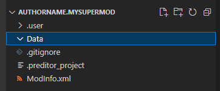
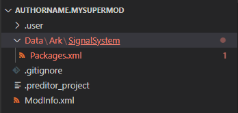

Basic XML Mod
This article will guide you how to make a simple XML mod that changes the amount of health that Medkits restore. This guide implies that you use VS Code and shows you a way to search for things in game files.
Prerequisites
- Create an empty mod
- Install Visual Studio Code as specified in the article linked above
Step 1. Looking for what to change
- Open
ChairManager/PreyFilesin VS Code. This folder contains all XML files that you can mod. - Press
Ctrl+Shift+Fto open Search All Files. - Type
medkit. This will show a large number of results. - Press "View as Tree" and "Collapse All" buttons at the top to make it easier to navigate.
- Entities (e.g. interactive objects) are defined in
Libs/EntityArchetypes. Open the first search result inLibs/EntityArchetypes/ArkPickups.xml.<EntityPrototype Name="Medical.MedKit" Id="{58D44466-33E6-491B-B0F1-9FE4B0FAE192}" Library="ArkPickups" Class="ArkMedKit" Description="" ArchetypeId="10739735956144611826"> <Properties metaTags_ArkMetaTags="3149325216955299302" bAvailableForRandom="1" ... - The game uses signals to apply effects like damage or healing. Navigate to
AppliedOnConsumeelement.<AppliedOnConsume es_RestoredPoints="HEALTH" signalpackage_SignalPackage="7745561655334079461"> <OptionalAbilityRequirement ability_AbilityRequirement="3149325216929346739" signalpackage_AbilityRequirementSignalPackage="10641886185836882035" /> </AppliedOnConsume> - This element states that when a medkit is comsumed, signal package with ID
7745561655334079461is sent to the player.
Signal package is a combination of signals and their values sent at once. - Press
Ctrl+Shift+Fand search for7745561655334079461. - Open the result in
Ark/SignalSystem/Packages.xml.<package name="MedKit" id="7745561655334079461"> <signal signalID="7745561656291547932" value="300" /> - It states that this package will create a signal with ID
7745561656291547932and value300(30 health points). - You can search all files for
7745561656291547932. Open the result inArk/SignalSystem/Signals.xmlto find out what that signal actually is. - You will need to change the value
300to a different one.
Step 2. Modifying the file
- Open your mod folder in VS Code. Create a folder named
Data.
 - Create the folders
Ark/SignalSystemand create an empty file namedPackages.xml
 - Copy and paste the root objects from the original file. Don't forget to close the
<packages>tag.

- Copy and paste the element for package with ID
7745561655334079461

- Change the value to something else. In this case,
10(1 hp).

- Save the file by pressing
Ctrl+S
Step 3. Applying and testing
- Apply the changes in the game:
- Preditor: Restart Predtior. It will merge the files automatically.
- Game: Press "Merge Mods" in ChairManager
- Try it out. Launch Preditor/Game
- In Debug Menu at the top, press
Campaign -> Clean Load Level -> Lobby - Jump down to take damage
- Spawn a medkit:
Debug Menu -> Items ->Give Item: -> MedKit - Use the medkit and check how much health was restored
- Alternatively, check the description of the Medkit item
Conclusion
You now have a basic understanding of how XML mods work, how to look for things to change and how to make an XML mod.